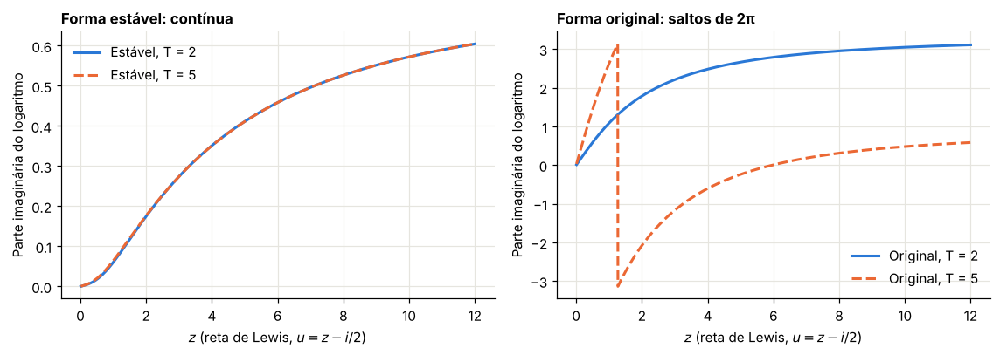
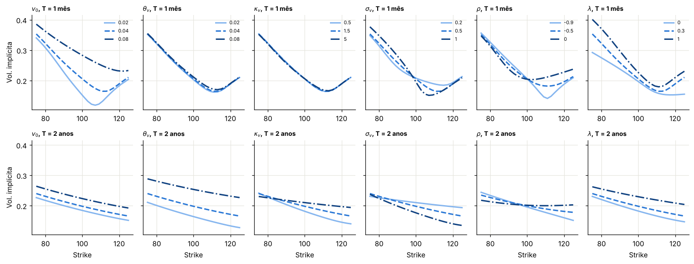

Módulo 11 — O modelo geral BCC97: volatilidade estocástica, saltos e juros estocásticos#
Curso: Derivativos com Python, a partir de Derivatives Analytics with Python (Y. Hilpisch, Wiley, 2015). Este módulo cobre: capítulo 9 do livro.
O que você vai conseguir fazer ao final#
Escrever o modelo de Bakshi, Cao e Chen (1997) e reconhecer seus casos particulares.
Deduzir o preço do título zero-cupom no CIR, resolvendo uma equação de Riccati.
Deduzir a função característica de Heston pelo mesmo caminho.
Evitar a armadilha numérica da fórmula original de Heston.
Deduzir a EDP do modelo e conferi-la numericamente.
Medir o que a aproximação do livro para os juros estocásticos deixa de fora.
Saber o que cada parâmetro faz com a superfície de volatilidade.
Onde estamos#
O Módulo 2 mostrou, em mundos sintéticos, que cada fato estilizado pede um mecanismo: volatilidade estocástica para o agrupamento e a curvatura, correlação negativa para o skew, saltos para o skew dos prazos curtos, e juros com reversão à média. O Módulo 10 mostrou que Merton sozinho não ajusta vários prazos. O BCC97 junta tudo.
A ferramenta que dá unidade ao módulo é a estrutura afim: nos três componentes, a função característica tem a forma \(\exp(A + B\cdot\text{estado})\), e encontrar \(A\) e \(B\) se reduz a resolver equações diferenciais ordinárias.
0. Preparação#
import numpy as np
import pandas as pd
import matplotlib.pyplot as plt
from scipy.integrate import simpson, solve_ivp
from scipy.optimize import brentq
from scipy.stats import norm
from IPython.display import display
AZUL, LARANJA, VERDE, CINZA = "#2a78d6", "#eb6834", "#1baf7a", "#8a8a84"
RAMPA = ["#86b6ef", "#2a78d6", "#104281"]
plt.rcParams.update({
"figure.figsize": (7.2, 4.0), "figure.dpi": 110,
"axes.spines.top": False, "axes.spines.right": False,
"axes.grid": True, "grid.color": "#e6e5df", "grid.linewidth": 0.8,
"axes.axisbelow": True, "axes.titlesize": 11, "axes.titleweight": "bold",
"axes.titlelocation": "left", "lines.linewidth": 2.0, "legend.frameon": False,
"font.size": 10,
})
def f3(x):
"""Formata com três casas decimais no padrão brasileiro."""
return f"{x:,.3f}".replace(",", "§").replace(".", ",").replace("§", ".")
def tabela(df):
"""Exibe um DataFrame com os números reais em três casas decimais."""
def fmt(v):
if isinstance(v, (float, np.floating)):
return "n/d" if np.isnan(v) else f3(v)
return v
display(df.map(fmt))
_checks = {"n": 0}
def ok(condicao, mensagem):
"""Verificação do laboratório: interrompe o notebook se a conta não fechar."""
assert bool(condicao), f"FALHOU: {mensagem}"
_checks["n"] += 1
print(f"OK — {mensagem}")
def bsm(S, K, T, r, sig):
d1 = (np.log(S / K) + (r + 0.5 * sig**2) * T) / (sig * np.sqrt(T))
return S * norm.cdf(d1) - K * np.exp(-r * T) * norm.cdf(d1 - sig * np.sqrt(T))
def vol_impl(preco, S, K, T, r):
piso = max(S - K * np.exp(-r * T), 0.0)
if not (piso + 1e-12 < preco < S):
return np.nan
return brentq(lambda s: float(bsm(S, K, T, r, s)) - preco, 1e-4, 4.0)
print("Ambiente pronto.")
Ambiente pronto.
1. O modelo#
Livro: §9.2 e §9.3
Sob \(Q\), as três equações são:
com \(dZ^1dZ^2 = \rho\,dt\), e o terceiro browniano e os saltos independentes do resto. Os saltos são como no Módulo 10, com \(J \sim N(\mu_J, \delta^2)\) e \(r_J = \lambda(e^{\mu_J + \delta^2/2} - 1)\).
Errata repetida do capítulo 8. A lei \(\ln(1+J) \sim N(\ln(1+\mu_J) - \delta^2/2, \delta^2)\) escrita na §9.2 não é a que corresponde a \(r_J\) e à função característica (9.11). A lei correta é \(J \sim N(\mu_J, \delta^2)\), para o log-salto.
1.1 Casos particulares#
Modelo |
Liga |
Desliga |
|---|---|---|
BSM |
— |
\(\sigma_v = 0\), \(\lambda = 0\), juros constantes |
Merton (M76) |
saltos |
\(\sigma_v = 0\) |
Heston (H93) |
volatilidade estocástica |
\(\lambda = 0\) |
Bates (B96) |
volatilidade estocástica e saltos |
juros estocásticos |
CIR (CIR85) |
juros |
— |
São 3 parâmetros de juros e 9 de ações: \(v_0, \kappa_v, \theta_v, \sigma_v, \rho, \lambda, \mu_J, \delta\), além de \(S_0\) observado.
1.2 Um papel para cada componente#
Os próprios autores resumem seus resultados empíricos assim (§9.3): a volatilidade estocástica é a melhoria de primeira ordem sobre o BSM; os saltos ajudam nos prazos curtos; os juros estocásticos, nos longos. Para hedge, a volatilidade estocástica sozinha já foi o melhor resultado.
2. Os juros: o título zero-cupom no CIR#
Livro: §9.4
2.1 A estrutura afim, passo a passo#
O preço de um título que paga 1 em \(T\) é \(P(t, T) = \mathbb{E}^Q_t\big[e^{-\int_t^T r_s\,ds}\big]\). Pelo argumento de Feynman-Kac do Módulo 5, com \(\tau = T - t\), esse valor satisfaz
Passo 1: o palpite afim. Tentamos \(P = e^{a(\tau) - b(\tau)\,r}\). Então \(P_\tau = (a' - b'r)P\), \(P_r = -bP\) e \(P_{rr} = b^2P\).
Passo 2: substituir.
Passo 3: separar. A equação vale para todo \(r\), então o termo constante e o coeficiente de \(r\) se anulam separadamente:
Uma equação de derivada parcial virou duas equações ordinárias. A de \(b\) é uma equação de Riccati: derivada igual a um polinômio de segundo grau.
Passo 4: resolver. As raízes do lado direito são \(b_\pm = (-\kappa_r \pm \gamma)/\sigma_r^2\), com \(\gamma = \sqrt{\kappa_r^2 + 2\sigma_r^2}\). A integração por frações parciais leva às fórmulas (9.4) a (9.7) do livro:
Laboratório 2.1 — Três caminhos para o mesmo número#
Fórmula fechada, integração numérica das equações de Riccati e Monte Carlo pela transição exata (Módulo 2).
CIR = dict(r0=0.02, kappa=0.8, theta=0.035, sigma=0.12)
def zero_cir(tau, r0, kappa, theta, sigma):
g = np.sqrt(kappa**2 + 2 * sigma**2)
den = 2 * g + (kappa + g) * (np.exp(g * tau) - 1)
b = 2 * (np.exp(g * tau) - 1) / den
ea = (2 * g * np.exp((kappa + g) * tau / 2) / den) ** (2 * kappa * theta / sigma**2)
return ea * np.exp(-b * r0)
def zero_riccati(tau, r0, kappa, theta, sigma):
def eqs(t, y):
a, b = y
return [-kappa * theta * b, 1 - kappa * b - 0.5 * sigma**2 * b**2]
sol = solve_ivp(eqs, (0, tau), [0.0, 0.0], rtol=1e-11, atol=1e-13)
a, b = sol.y[:, -1]
return np.exp(a - b * r0)
def simular_cir(r0, kappa, theta, sigma, T, M, I, rng):
dt = T / M
c = sigma**2 * (1 - np.exp(-kappa * dt)) / (4 * kappa)
gl = 4 * kappa * theta / sigma**2
r = np.full(I, r0)
integ = np.zeros(I)
for _ in range(M):
novo = c * rng.noncentral_chisquare(gl, r * np.exp(-kappa * dt) / c, I)
integ += 0.5 * (r + novo) * dt
r = novo
return integ
rng = np.random.default_rng(1101)
linhas = []
for tau in [0.5, 1.0, 2.0, 5.0]:
integ = simular_cir(**CIR, T=tau, M=int(100 * tau), I=100_000, rng=rng)
fd = np.exp(-integ)
linhas.append({"Prazo": tau, "Fórmula": float(zero_cir(tau, **CIR)), "Riccati numérica": float(zero_riccati(tau, **CIR)), "Monte Carlo": fd.mean(), "Erro-padrão": fd.std(ddof=1) / np.sqrt(fd.size), "Taxa zero (%)": float(-np.log(zero_cir(tau, **CIR)) / tau * 100)})
zc = pd.DataFrame(linhas)
tabela(zc)
print("Condição de Feller 2κθ − σ²:", f3(2 * CIR["kappa"] * CIR["theta"] - CIR["sigma"] ** 2))
ok(np.allclose(zc["Fórmula"], zc["Riccati numérica"], atol=1e-10), "a fórmula fechada resolve as equações de Riccati")
ok(((zc["Fórmula"] - zc["Monte Carlo"]).abs() < 4 * zc["Erro-padrão"] + 2e-4).all(), "Monte Carlo confere com a fórmula")
| Prazo | Fórmula | Riccati numérica | Monte Carlo | Erro-padrão | Taxa zero (%) | |
|---|---|---|---|---|---|---|
| 0 | 0,500 | 0,989 | 0,989 | 0,989 | 0,000 | 2,263 |
| 1 | 1,000 | 0,976 | 0,976 | 0,976 | 0,000 | 2,464 |
| 2 | 2,000 | 0,947 | 0,947 | 0,947 | 0,000 | 2,743 |
| 3 | 5,000 | 0,856 | 0,856 | 0,856 | 0,000 | 3,111 |
Condição de Feller 2κθ − σ²: 0,042
OK — a fórmula fechada resolve as equações de Riccati
OK — Monte Carlo confere com a fórmula
3. A volatilidade: a função característica de Heston#
Livro: §9.5.2, equação (9.10)
Fixe, por ora, juros constantes. Seja \(x_t = \ln S_t - rt\), o log do preço a termo. Queremos \(\phi(u) = \mathbb{E}\big[e^{iu(x_T - x_0)}\big]\).
3.1 Dedução pela mesma receita#
Pelo lema de Itô, \(dx = -\tfrac12v\,dt + \sqrt v\,dZ^1\). A função \(f(x, v, \tau) = \mathbb{E}[e^{iux_T}\mid x, v]\) satisfaz a EDP de Feynman-Kac:
Passo 1: palpite afim. \(f = \exp\big(iux + A(\tau) + B(\tau)v\big)\). Então \(f_x = iuf\), \(f_{xx} = -u^2f\), \(f_v = Bf\), \(f_{vv} = B^2f\), \(f_{xv} = iuBf\).
Passo 2: substituir e separar em termo constante e coeficiente de \(v\):
Outra Riccati, agora com coeficientes complexos.
Passo 3: resolver. Com \(\xi = \kappa_v - \rho\sigma_viu\) e \(d = \sqrt{\xi^2 + \sigma_v^2(u^2 + iu)}\), as raízes são \((\xi \pm d)/\sigma_v^2\). Definindo \(g = (\xi - d)/(\xi + d)\):
E \(\phi^{H93}(u) = e^{A + Bv_0}\).
3.2 A armadilha#
Heston (1993) escreveu a solução com a outra raiz: \(g' = 1/g\) e \(e^{+d\tau}\). Matematicamente é a mesma função. Numericamente, não: o logaritmo complexo \(\ln\frac{1 - g'e^{d\tau}}{1 - g'}\) cruza o corte do ramo principal à medida que \(u\) cresce, e o computador escolhe o ramo errado. O integrando fica descontínuo e o preço sai errado, sem nenhum aviso. Albrecher et al. (2007) chamaram isso de little Heston trap.
O livro usa a forma estável: seu \(c_2\) é \(-d\), de modo que \(c_3 = g\) e \(e^{c_2T} = e^{-dT}\). Vale verificar, porque muitos códigos copiados da literatura usam a forma original.
Laboratório 3.1 — Riccati numérica e as duas fórmulas#
def cf_heston(u, T, v0, kappa, theta, sigma, rho):
"""Forma estável (Albrecher et al.): a usada pelo livro."""
xi = kappa - rho * sigma * 1j * u
d = np.sqrt(xi**2 + sigma**2 * (1j * u + u**2))
g = (xi - d) / (xi + d)
e = np.exp(-d * T)
A = kappa * theta / sigma**2 * ((xi - d) * T - 2 * np.log((1 - g * e) / (1 - g)))
B = (xi - d) / sigma**2 * (1 - e) / (1 - g * e)
return np.exp(A + B * v0)
def cf_heston_original(u, T, v0, kappa, theta, sigma, rho):
"""Forma de Heston (1993), com a outra raiz."""
xi = kappa - rho * sigma * 1j * u
d = np.sqrt(xi**2 + sigma**2 * (1j * u + u**2))
g = (xi + d) / (xi - d)
with np.errstate(all="ignore"):
e = np.exp(d * T)
A = kappa * theta / sigma**2 * ((xi + d) * T - 2 * np.log((1 - g * e) / (1 - g)))
B = (xi + d) / sigma**2 * (1 - e) / (1 - g * e)
return np.exp(A + B * v0)
def cf_heston_ode(u, T, v0, kappa, theta, sigma, rho):
xi = kappa - rho * sigma * 1j * u
def eqs(t, y):
A, B = y[0] + 1j * y[1], y[2] + 1j * y[3]
dA = kappa * theta * B
dB = 0.5 * sigma**2 * B**2 - xi * B - 0.5 * (u**2 + 1j * u)
return [dA.real, dA.imag, dB.real, dB.imag]
s = solve_ivp(eqs, (0, T), [0, 0, 0, 0], rtol=1e-10, atol=1e-12, method="DOP853").y[:, -1]
return np.exp(s[0] + 1j * s[1] + (s[2] + 1j * s[3]) * v0)
H = dict(v0=0.04, kappa=1.0, theta=0.04, sigma=0.9, rho=-0.7)
us = [0.5, 2.0, 7.0, 15.0]
dif = max(abs(cf_heston(u, 2.0, **H) - cf_heston_ode(u, 2.0, **H)) for u in us)
ok(dif < 1e-8, "a fórmula estável resolve as equações de Riccati")
ok(abs(cf_heston(-1j, 3.0, **H) - 1) < 1e-12, "martingale: φ(−i) = 1")
Z = np.linspace(0.0, 200.0, 20001)
def lewis(S, K, T, r, cf):
K = np.atleast_1d(np.asarray(K, float))
k = np.log(S / K) + r * T
h = np.exp(1j * Z * k[:, None]) * cf(Z - 0.5j)
return S - np.sqrt(S * K) * np.exp(-0.5 * r * T) / np.pi * simpson(h.real / (Z**2 + 0.25), x=Z, axis=1)
S0, r = 100.0, 0.02
linhas = []
for T in [1.0, 2.0, 5.0, 10.0]:
a = float(lewis(S0, 100.0, T, r, lambda u: cf_heston(u, T, **H))[0])
b = float(lewis(S0, 100.0, T, r, lambda u: cf_heston_original(u, T, **H))[0])
linhas.append({"Prazo": T, "Forma estável": a, "Forma original": b})
arm = pd.DataFrame(linhas)
tabela(arm)
ur = np.linspace(0.01, 12, 2000)
xi = H["kappa"] - H["rho"] * H["sigma"] * 1j * (ur - 0.5j)
d = np.sqrt(xi**2 + H["sigma"] ** 2 * (1j * (ur - 0.5j) + (ur - 0.5j) ** 2))
fig, (a1, a2) = plt.subplots(1, 2, figsize=(10.5, 3.8))
for T, cor, est in [(2.0, AZUL, "-"), (5.0, LARANJA, "--")]:
g1, g2 = (xi - d) / (xi + d), (xi + d) / (xi - d)
with np.errstate(all="ignore"):
a1.plot(ur, np.imag(np.log((1 - g1 * np.exp(-d * T)) / (1 - g1))), color=cor, ls=est, label=f"Estável, T = {T:.0f}")
a2.plot(ur, np.imag(np.log((1 - g2 * np.exp(d * T)) / (1 - g2))), color=cor, ls=est, label=f"Original, T = {T:.0f}")
for ax, t in [(a1, "Forma estável: contínua"), (a2, "Forma original: saltos de 2π")]:
ax.set_title(t)
ax.set_xlabel("$z$ (reta de Lewis, $u = z - i/2$)")
ax.set_ylabel("Parte imaginária do logaritmo")
ax.legend()
plt.tight_layout()
plt.show()
ok(abs(arm["Forma estável"].iloc[0] - arm["Forma original"].iloc[0]) < 1e-8, "em prazo curto, as duas formas coincidem")
ok(not np.isclose(arm["Forma estável"].iloc[2], arm["Forma original"].iloc[2], atol=0.01), "em prazo longo, a forma original dá um preço errado")
OK — a fórmula estável resolve as equações de Riccati
OK — martingale: φ(−i) = 1
| Prazo | Forma estável | Forma original | |
|---|---|---|---|
| 0 | 1,000 | 6,924 | 6,924 |
| 1 | 2,000 | 10,335 | 10,422 |
| 2 | 5,000 | 18,727 | 24,244 |
| 3 | 10,000 | 29,626 | n/d |

OK — em prazo curto, as duas formas coincidem
OK — em prazo longo, a forma original dá um preço errado
Laboratório 3.2 — Conferência por simulação#
Uma última conferência, independente das deduções: Monte Carlo com esquema de Euler e truncamento total, em passos finos (o Módulo 12 discute alternativas melhores).
def heston_mc(S0, r, T, v0, kappa, theta, sigma, rho, M, I, rng):
dt = T / M
v = np.full(I, v0)
x = np.zeros(I)
for _ in range(M):
z1 = rng.standard_normal(I)
z2 = rho * z1 + np.sqrt(1 - rho**2) * rng.standard_normal(I)
vp = np.maximum(v, 0.0)
x += (r - 0.5 * vp) * dt + np.sqrt(vp * dt) * z1
v += kappa * (theta - vp) * dt + sigma * np.sqrt(vp * dt) * z2
return S0 * np.exp(x)
rng = np.random.default_rng(1102)
ST = heston_mc(S0, r, 1.0, **H, M=500, I=200_000, rng=rng)
linhas = []
for K in [80.0, 100.0, 120.0]:
a = np.exp(-r) * np.maximum(ST - K, 0.0)
ref = float(lewis(S0, K, 1.0, r, lambda u: cf_heston(u, 1.0, **H))[0])
linhas.append({"Strike": K, "Lewis": ref, "Monte Carlo": a.mean(), "Erro-padrão": a.std(ddof=1) / np.sqrt(a.size)})
mc = pd.DataFrame(linhas)
tabela(mc)
ok(((mc["Lewis"] - mc["Monte Carlo"]).abs() < 4 * mc["Erro-padrão"] + 0.02).all(), "Monte Carlo confere com a fórmula de Heston")
| Strike | Lewis | Monte Carlo | Erro-padrão | |
|---|---|---|---|---|
| 0 | 80,000 | 23,286 | 23,324 | 0,027 |
| 1 | 100,000 | 6,924 | 6,949 | 0,018 |
| 2 | 120,000 | 0,518 | 0,521 | 0,008 |
OK — Monte Carlo confere com a fórmula de Heston
4. Juntando: a função característica do BCC97#
Livro: §9.5.2, equações (9.11) a (9.13)
Como os saltos são independentes da parte de Heston, a função característica do log-retorno é o produto (Módulo 7):
Os juros entram, no livro, por um atalho: a taxa constante é substituída pela taxa zero do CIR para o prazo da opção, \(\bar r_T = -\ln P(0, T)/T\). A Seção 6 examina esse atalho.
Laboratório 4.1 — Os casos particulares#
def cf_bcc(u, T, v0, kappa, theta, sigma, rho, lam, mu, delta):
rj = lam * (np.exp(mu + 0.5 * delta**2) - 1)
saltos = np.exp(T * (-1j * u * rj + lam * (np.exp(1j * u * mu - 0.5 * u**2 * delta**2) - 1)))
return cf_heston(u, T, v0, kappa, theta, sigma, rho) * saltos
def merton_serie(S, K, T, r, sig, lam, mu, delta, n_max=60):
from scipy.stats import poisson
kap = np.exp(mu + 0.5 * delta**2) - 1
tot = 0.0
for n in range(n_max):
sn = np.sqrt(sig**2 + n * delta**2 / T)
rn = r - lam * kap + n * np.log1p(kap) / T
tot = tot + poisson.pmf(n, lam * (1 + kap) * T) * bsm(S, K, T, rn, sn)
return tot
K = np.array([85.0, 100.0, 115.0])
T = 0.75
eps = 1e-5
bsm_via = lewis(S0, K, T, r, lambda u: cf_bcc(u, T, 0.04, 1.0, 0.04, eps, 0.0, 0.0, 0.0, 0.1))
m76_via = lewis(S0, K, T, r, lambda u: cf_bcc(u, T, 0.03, 1.0, 0.03, eps, 0.0, 0.8, -0.1, 0.08))
h93_via = lewis(S0, K, T, r, lambda u: cf_bcc(u, T, **H, lam=0.0, mu=0.0, delta=0.1))
tabela(pd.DataFrame({"Strike": K, "BCC97 → BSM": bsm_via, "BSM": bsm(S0, K, T, r, 0.2), "BCC97 → M76": m76_via, "Série de Merton": merton_serie(S0, K, T, r, np.sqrt(0.03), 0.8, -0.1, 0.08), "BCC97 → H93": h93_via, "Heston": lewis(S0, K, T, r, lambda u: cf_heston(u, T, **H))}))
ok(np.max(np.abs(bsm_via - bsm(S0, K, T, r, 0.2))) < 1e-4, "com σ_v → 0 e sem saltos, o BCC97 vira BSM")
ok(np.max(np.abs(m76_via - merton_serie(S0, K, T, r, np.sqrt(0.03), 0.8, -0.1, 0.08))) < 1e-4, "com σ_v → 0, vira Merton")
ok(np.max(np.abs(h93_via - lewis(S0, K, T, r, lambda u: cf_heston(u, T, **H)))) < 1e-12, "sem saltos, vira Heston")
| Strike | BCC97 → BSM | BSM | BCC97 → M76 | Série de Merton | BCC97 → H93 | Heston | |
|---|---|---|---|---|---|---|---|
| 0 | 85,000 | 17,522 | 17,522 | 17,780 | 17,780 | 18,083 | 18,083 |
| 1 | 100,000 | 7,620 | 7,620 | 7,744 | 7,744 | 5,964 | 5,964 |
| 2 | 115,000 | 2,539 | 2,539 | 2,465 | 2,465 | 0,618 | 0,618 |
OK — com σ_v → 0 e sem saltos, o BCC97 vira BSM
OK — com σ_v → 0, vira Merton
OK — sem saltos, vira Heston
5. A EDP do modelo#
Livro: §9.5.1 e §9.7.1
5.1 Itô em várias dimensões, com saltos#
Para \(f(S, v, r, t)\), a expansão de Taylor de segunda ordem com as regras \((dZ^i)^2 = dt\), \(dZ^1dZ^2 = \rho\,dt\) e demais produtos nulos dá a parte contínua. O salto exige outro tratamento: num salto, \(S\) passa de \(S_-\) a \(S_-e^J\) de uma vez, e a variação de \(f\) é a diferença exata, e não uma derivada:
em que \(dS^c\) é a parte contínua de \(dS\).
5.2 A EDP#
Sob \(Q\), o preço descontado de qualquer derivativo é martingale, logo o drift de \(dC\) é \(rC\). Tomando a esperança dos termos e usando \(\mathbb{E}[dN] = \lambda\,dt\):
Duas observações:
Ao contrário do BSM, essa EDP não vem de uma replicação. O mercado é incompleto (Módulo 4), e a equação vale sob a medida \(Q\) escolhida. Os parâmetros que aparecem nela são os parâmetros sob \(Q\), que é o que a calibração estima.
Usamos \(\mathbb{E}[dN] = \lambda\,dt\), mas o termo \(f_S\,dS\) usa só a parte contínua. Se usássemos \(f_S\,dS\) completo, o salto seria contado duas vezes.
Erratas do livro na equação (9.8). (i) O primeiro termo aparece como \(\tfrac12vS^2\,\partial^2C/\partial S\); o denominador correto é \(\partial S^2\). (ii) Faltam os fatores de variância nos termos de difusão de \(v\) e \(r\): o correto é \(\tfrac12\sigma_v^2\,v\,\partial^2C/\partial v^2\) e \(\tfrac12\sigma_r^2\,r\,\partial^2C/\partial r^2\), já que os coeficientes de difusão são \(\sigma_v\sqrt v\) e \(\sigma_r\sqrt r\), cujos quadrados aparecem na própria prova. (iii) Na prova, o termo de salto entra como \(\frac{\partial A}{\partial S}\,jdN\), uma aproximação de primeira ordem, enquanto a EDP usa a diferença exata, que é a forma correta.
Laboratório 5.1 — A fórmula de Fourier satisfaz a EDP?#
Com juros constantes, calculamos as derivadas de \(C(S, v, \tau)\) por diferenças finitas sobre preços de Lewis, e o termo de salto por quadratura de Gauss-Hermite. O resíduo da EDP correta deve ser próximo de zero. Testamos também a versão impressa, sem o fator \(v\) em \(C_{vv}\).
B96 = dict(kappa=1.5, theta=0.04, sigma=0.5, rho=-0.7, lam=0.5, mu=-0.10, delta=0.10)
def preco(S, v, tau, K=100.0, r=0.02):
return float(lewis(S, K, tau, r, lambda u: cf_bcc(u, tau, v, **B96))[0])
def residuos(S, v, tau, r=0.02):
hS, hv, ht = 0.5, 1e-3, 1e-4
C = preco(S, v, tau)
CS = (preco(S + hS, v, tau) - preco(S - hS, v, tau)) / (2 * hS)
CSS = (preco(S + hS, v, tau) - 2 * C + preco(S - hS, v, tau)) / hS**2
Cv = (preco(S, v + hv, tau) - preco(S, v - hv, tau)) / (2 * hv)
Cvv = (preco(S, v + hv, tau) - 2 * C + preco(S, v - hv, tau)) / hv**2
CSv = (preco(S + hS, v + hv, tau) - preco(S + hS, v - hv, tau) - preco(S - hS, v + hv, tau) + preco(S - hS, v - hv, tau)) / (4 * hS * hv)
Ct = -(preco(S, v, tau + ht) - preco(S, v, tau - ht)) / (2 * ht)
x, w = np.polynomial.hermite_e.hermegauss(40)
w = w / w.sum()
Jn = B96["mu"] + B96["delta"] * x
salto = sum(wi * preco(S * np.exp(ji), v, tau) for wi, ji in zip(w, Jn)) - C
rj = B96["lam"] * (np.exp(B96["mu"] + 0.5 * B96["delta"] ** 2) - 1)
comum = 0.5 * v * S**2 * CSS + (r - rj) * S * CS + B96["rho"] * B96["sigma"] * v * S * CSv + B96["kappa"] * (B96["theta"] - v) * Cv + Ct - r * C + B96["lam"] * salto
return comum + 0.5 * B96["sigma"] ** 2 * v * Cvv, comum + 0.5 * B96["sigma"] ** 2 * Cvv, C
linhas = []
for S, v, tau in [(100.0, 0.04, 0.5), (90.0, 0.02, 1.0), (115.0, 0.06, 0.25)]:
rc, ri, C = residuos(S, v, tau)
linhas.append({"S": S, "v": v, "τ": tau, "Preço": C, "Resíduo: EDP correta": rc, "Resíduo: sem o fator v em C_vv": ri})
edp = pd.DataFrame(linhas)
tabela(edp)
ok((edp["Resíduo: EDP correta"].abs() < 2e-3).all(), "o preço de Fourier satisfaz a EDP correta")
ok((edp["Resíduo: sem o fator v em C_vv"].abs() > 0.05).all(), "a forma impressa, sem o fator v, não é satisfeita")
| S | v | τ | Preço | Resíduo: EDP correta | Resíduo: sem o fator v em C_vv | |
|---|---|---|---|---|---|---|
| 0 | 100,000 | 0,040 | 0,500 | 6,399 | -0,002 | -35,060 |
| 1 | 90,000 | 0,020 | 1,000 | 2,822 | -0,001 | -16,669 |
| 2 | 115,000 | 0,060 | 0,250 | 16,830 | 0,000 | 0,104 |
OK — o preço de Fourier satisfaz a EDP correta
OK — a forma impressa, sem o fator v, não é satisfeita
6. Juros estocásticos: o que o atalho do livro deixa de fora#
Livro: §9.5.2, definição de \(r_{0,T}\) em \(H_1\)
6.1 O preço exato, sob independência#
Seja \(R = \int_0^T r_s\,ds\). Como os juros são independentes do resto, escrevemos \(S_T = S_0\,e^{R}\,X\), em que \(X\) depende só da volatilidade e dos saltos. O preço é
O preço exato é a média, sobre os cenários de juros, dos preços com taxa constante igual a \(R/T\).
6.2 O atalho#
O livro, seguindo uma prática comum, usa um único valor: \(\bar r_T = -\ln P(0,T)/T\). Pela desigualdade de Jensen, \(\mathbb{E}[e^{-R}] = P(0,T)\), ou seja, o atalho acerta o desconto médio. Mas o preço da call não é linear em \(R\): ele é convexo, porque juros mais altos aumentam o forward e o valor da call, com curvatura. A diferença é
pequena quando a variância de \(R\) é pequena. O artigo original de Bakshi, Cao e Chen trata isso de forma exata, usando a função característica conjunta com os juros. O atalho é uma simplificação do livro.
Laboratório 6.1 — O tamanho do efeito#
Calculamos o preço exato pela média sobre 400 quantis da distribuição de \(R\), simulada pela transição exata do CIR. Variamos o prazo e a volatilidade dos juros.
B97 = dict(v0=0.04, kappa=1.5, theta=0.04, sigma=0.5, rho=-0.7, lam=0.5, mu=-0.10, delta=0.10)
def preco_taxa(K, T, rbar):
"""Preço com taxa constante rbar, vetorizado em rbar."""
rbar = np.atleast_1d(rbar)
fi = cf_bcc(Z - 0.5j, T, **B97)
k = np.log(S0 / K) + rbar[:, None] * T
integ = simpson((np.exp(1j * Z * k) * fi).real / (Z**2 + 0.25), x=Z, axis=1)
return S0 - np.sqrt(S0 * K) * np.exp(-0.5 * rbar * T) / np.pi * integ
rng = np.random.default_rng(1103)
linhas = []
for sig_r in [0.05, 0.12, 0.25]:
cir = dict(r0=0.02, kappa=0.8, theta=0.035, sigma=sig_r)
for T in [0.5, 2.0, 5.0]:
R_ = simular_cir(**cir, T=T, M=int(50 * T), I=100_000, rng=rng)
q = np.quantile(R_, (np.arange(400) + 0.5) / 400)
rbar = -np.log(zero_cir(T, **cir)) / T
for K in [100.0]:
exato = float(np.mean(preco_taxa(K, T, q / T)))
atalho = float(preco_taxa(K, T, rbar)[0])
linhas.append({"σ_r": sig_r, "Prazo": T, "Desvio de R/T (p.p.)": float(np.std(R_ / T) * 100), "Exato": exato, "Atalho do livro": atalho, "Diferença": exato - atalho, "Diferença (% do preço)": (exato - atalho) / exato * 100})
jur = pd.DataFrame(linhas)
tabela(jur)
ok((jur["Diferença"] > -1e-3).all(), "o atalho nunca supera o preço exato: efeito de convexidade")
ok(jur.query("σ_r == 0.12 and Prazo == 0.5")["Diferença (% do preço)"].iloc[0] < 0.1, "com volatilidade de juros moderada e prazo curto, o atalho é excelente")
ok(jur["Diferença (% do preço)"].max() > 5 * jur.query("σ_r == 0.12 and Prazo == 0.5")["Diferença (% do preço)"].iloc[0], "o erro do atalho cresce com o prazo e com a volatilidade dos juros")
| σ_r | Prazo | Desvio de R/T (p.p.) | Exato | Atalho do livro | Diferença | Diferença (% do preço) | |
|---|---|---|---|---|---|---|---|
| 0 | 0,050 | 0,500 | 0,259 | 6,477 | 6,476 | 0,000 | 0,007 |
| 1 | 0,050 | 2,000 | 0,388 | 14,346 | 14,343 | 0,003 | 0,023 |
| 2 | 0,050 | 5,000 | 0,384 | 25,779 | 25,770 | 0,010 | 0,037 |
| 3 | 0,120 | 0,500 | 0,622 | 6,478 | 6,476 | 0,001 | 0,021 |
| 4 | 0,120 | 2,000 | 0,926 | 14,352 | 14,335 | 0,017 | 0,118 |
| 5 | 0,120 | 5,000 | 0,925 | 25,789 | 25,726 | 0,063 | 0,245 |
| 6 | 0,250 | 0,500 | 1,293 | 6,480 | 6,475 | 0,005 | 0,075 |
| 7 | 0,250 | 2,000 | 1,933 | 14,389 | 14,304 | 0,085 | 0,593 |
| 8 | 0,250 | 5,000 | 1,926 | 25,810 | 25,556 | 0,253 | 0,982 |
OK — o atalho nunca supera o preço exato: efeito de convexidade
OK — com volatilidade de juros moderada e prazo curto, o atalho é excelente
OK — o erro do atalho cresce com o prazo e com a volatilidade dos juros
Leitura. Para os prazos das opções listadas de índice, de dias a poucos meses, o atalho é praticamente exato. Para produtos longos ou híbridos, que dependem de juros e ações ao mesmo tempo, é preciso o tratamento completo, que também abriria espaço para correlação entre juros e índice, ausente no BCC97.
7. O que cada parâmetro faz com a superfície#
Antes de calibrar (Módulos 13 e 14), vale ter intuição sobre o papel de cada parâmetro. Variamos um parâmetro de cada vez a partir de um caso-base e olhamos para a volatilidade implícita em dois prazos.
Laboratório 7.1 — Os parâmetros, um a um#
base = dict(v0=0.04, kappa=1.5, theta=0.04, sigma=0.5, rho=-0.7, lam=0.3, mu=-0.10, delta=0.10)
variacoes = {
"v0": [0.02, 0.04, 0.08],
"theta": [0.02, 0.04, 0.08],
"kappa": [0.5, 1.5, 5.0],
"sigma": [0.2, 0.5, 1.0],
"rho": [-0.9, -0.5, 0.0],
"lam": [0.0, 0.3, 1.0],
}
nomes = {"v0": "$v_0$", "theta": "$\\theta_v$", "kappa": "$\\kappa_v$", "sigma": "$\\sigma_v$", "rho": "$\\rho$", "lam": "$\\lambda$"}
Ks = np.linspace(75, 125, 26)
fig, eixos = plt.subplots(2, 6, figsize=(14, 5.4), sharey=True)
efeito = {}
for j, (par, vals) in enumerate(variacoes.items()):
for i, T in enumerate([1 / 12, 2.0]):
ax = eixos[i, j]
niveis = []
for v_, cor, est in zip(vals, RAMPA, ["-", "--", "-."]):
p = {**base, par: v_}
c = lewis(S0, Ks, T, 0.02, lambda u: cf_bcc(u, T, **p))
iv = np.array([vol_impl(cc, S0, k, T, 0.02) for cc, k in zip(c, Ks)])
ax.plot(Ks, iv, color=cor, ls=est, label=f"{v_:g}")
niveis.append(iv)
efeito[(par, T)] = (np.nanmean(niveis[-1] - niveis[0]), np.nanmean((niveis[-1][:5] - niveis[-1][-5:]) - (niveis[0][:5] - niveis[0][-5:])))
ax.set_title(f"{nomes[par]}, T = {'1 mês' if T < 1 else '2 anos'}", fontsize=9)
if i == 1:
ax.set_xlabel("Strike")
if j == 0:
ax.set_ylabel("Vol. implícita")
if i == 0:
ax.legend(fontsize=7)
plt.tight_layout()
plt.show()
ef = pd.DataFrame([{"Parâmetro": p, "Prazo": "1 mês" if T < 1 else "2 anos", "Variação do nível": n, "Variação do skew": s} for (p, T), (n, s) in efeito.items()])
tabela(ef)
e = {(r_["Parâmetro"], r_["Prazo"]): r_ for _, r_ in ef.iterrows()}
ok(abs(e[("v0", "1 mês")]["Variação do nível"]) > 2 * abs(e[("v0", "2 anos")]["Variação do nível"]), "v0 domina o nível dos prazos curtos")
ok(abs(e[("theta", "2 anos")]["Variação do nível"]) > 2 * abs(e[("theta", "1 mês")]["Variação do nível"]), "θ domina o nível dos prazos longos")
ok(e[("rho", "2 anos")]["Variação do skew"] < 0, "ρ mais alto (menos negativo) reduz o skew")
ok(e[("lam", "1 mês")]["Variação do skew"] > e[("lam", "2 anos")]["Variação do skew"], "os saltos pesam mais no skew dos prazos curtos")

| Parâmetro | Prazo | Variação do nível | Variação do skew | |
|---|---|---|---|---|
| 0 | v0 | 1 mês | 0,088 | 0,007 |
| 1 | v0 | 2 anos | 0,039 | -0,003 |
| 2 | theta | 1 mês | 0,006 | 0,001 |
| 3 | theta | 2 anos | 0,089 | -0,019 |
| 4 | kappa | 1 mês | -0,000 | -0,002 |
| 5 | kappa | 2 anos | 0,026 | -0,056 |
| 6 | sigma | 1 mês | 0,004 | 0,038 |
| 7 | sigma | 2 anos | -0,031 | 0,056 |
| 8 | rho | 1 mês | 0,012 | -0,051 |
| 9 | rho | 2 anos | 0,008 | -0,065 |
| 10 | lam | 1 mês | 0,054 | 0,038 |
| 11 | lam | 2 anos | 0,046 | -0,022 |
OK — v0 domina o nível dos prazos curtos
OK — θ domina o nível dos prazos longos
OK — ρ mais alto (menos negativo) reduz o skew
OK — os saltos pesam mais no skew dos prazos curtos
Resumo para a calibração:
Parâmetro |
Efeito principal |
|---|---|
\(v_0\) |
nível dos prazos curtos |
\(\theta_v\) |
nível dos prazos longos |
\(\kappa_v\) |
velocidade de passagem de \(v_0\) para \(\theta_v\) ao longo dos prazos |
\(\sigma_v\) |
curvatura do sorriso |
\(\rho\) |
inclinação (skew) |
\(\lambda, \mu_J, \delta\) |
skew e caudas dos prazos curtos |
Vários parâmetros têm efeitos parecidos. Isso antecipa o que veremos na calibração: algumas combinações são bem determinadas pelo mercado, outras não.
8. Síntese#
O BCC97 junta Bates (índice) e CIR (juros), e contém BSM, Merton e Heston como casos particulares.
A estrutura afim transforma o problema de preço em equações de Riccati, tanto nos juros quanto na volatilidade.
A fórmula de Heston tem duas formas equivalentes na matemática; só a estável funciona no computador.
A EDP vale sob \(Q\), sem replicação, e o salto entra por diferença exata.
O atalho do livro para juros estocásticos é excelente em prazos curtos e se degrada nos longos.
Cada parâmetro tem uma assinatura na superfície, com sobreposições.
9. Notas sobre o livro neste capítulo#
Local |
Comentário |
|---|---|
§9.2 |
a lei do salto não corresponde a \(r_J\) nem a (9.11); o correto é \(J \sim N(\mu_J, \delta^2)\) para o log-salto |
Eq. (9.8) |
\(\partial^2C/\partial S\) deveria ser \(\partial^2C/\partial S^2\) |
Eq. (9.8) |
faltam os fatores \(v\) e \(r\) nos termos \(\tfrac12\sigma_v^2\,\partial^2C/\partial v^2\) e \(\tfrac12\sigma_r^2\,\partial^2C/\partial r^2\) |
Prova da Prop. 8 |
o salto entra como \(\partial A/\partial S\cdot jdN\), aproximação de primeira ordem; o certo é a diferença exata, como a própria (9.8) usa |
Prova da Prop. 8 |
na primeira linha da expansão, \(\partial A/\partial t\) aparece dentro do fator \(\tfrac12\) |
§9.5.2 |
o uso de \(r_{0,T} = -\ln B_0(T)/T\) é uma aproximação, não o tratamento de juros estocásticos do artigo original |
Eq. (9.10) |
a forma usada é a estável, com \(c_2 = -d\); ponto positivo do livro |
10. Exercícios#
Exercício 1. Verifique que \(b(\tau)\) do CIR satisfaz \(b'(0) = 1\) e interprete.
Solução
Pela equação, \(b'(0) = 1 - 0 - 0 = 1\). Para prazos curtos, \(b(\tau) \approx \tau\) e \(P \approx e^{-r\tau}\): no curto prazo, o desconto é pela taxa atual.
Exercício 2. Use a Riccati de Heston para mostrar que, com \(\sigma_v = 0\) e \(v_0 = \theta_v\), a função característica é a do BSM.
Solução
Com \(\sigma_v = 0\): \(B' = -\kappa_vB - \tfrac12(u^2 + iu)\), linear. Com \(v_0 = \theta_v\), a variância fica constante, e \(A + Bv_0 = -\tfrac12\theta_v(u^2 + iu)\tau\), a função característica do BSM com \(\sigma^2 = \theta_v\).
Exercício 3. Mostre que \(\mathbb{E}[v_T] = \theta_v + (v_0 - \theta_v)e^{-\kappa_vT}\) e use o resultado para explicar a tabela da Seção 7.
Solução
Tomando esperança em \(dv\): \(\frac{d}{dt}\mathbb{E}[v] = \kappa_v(\theta_v - \mathbb{E}[v])\), cuja solução é a dada. A variância média até \(T\) é uma média ponderada entre \(v_0\) e \(\theta_v\), com mais peso em \(v_0\) para prazos curtos.
Exercício 4. Por que a convexidade da Seção 6 tem o sinal que tem? E para uma put?
Solução
Como função de \(\bar r\), a call é \(S_0 - \dots\); seu preço cresce e é convexo em \(\bar r\), e a média de uma função convexa supera a função da média. Para a put, que cai com \(\bar r\), a convexidade também vale; por paridade, \(P = C - S_0 + K e^{-\bar rT}\), e \(Ke^{-\bar rT}\) também é convexo.
print(f"Módulo 11 concluído: {_checks['n']} verificações aprovadas.")
Módulo 11 concluído: 19 verificações aprovadas.